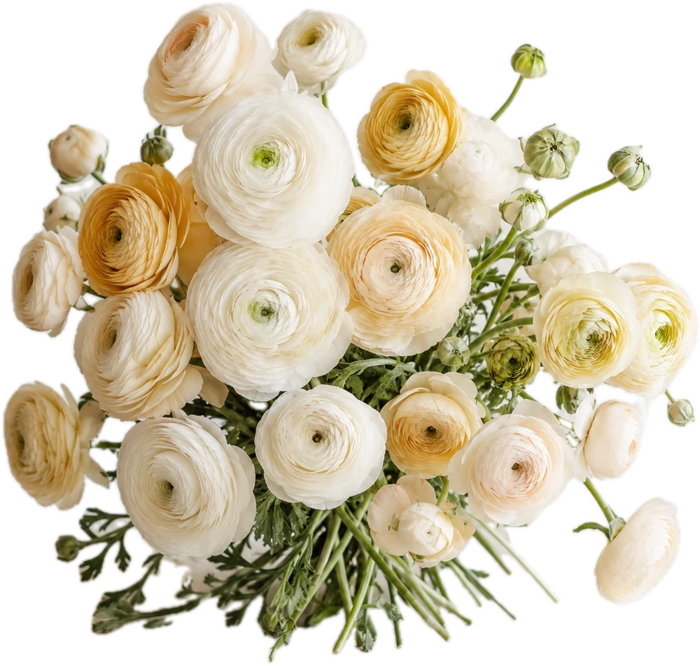
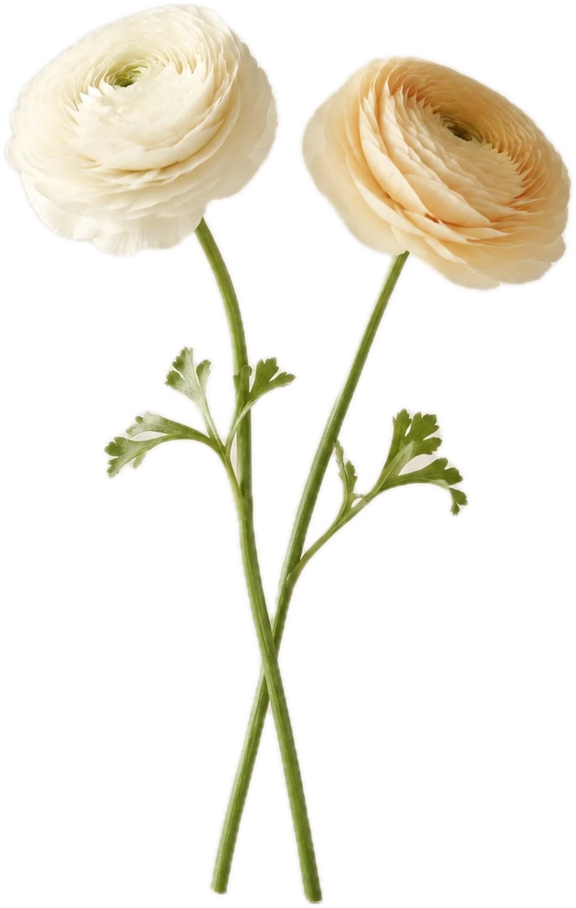
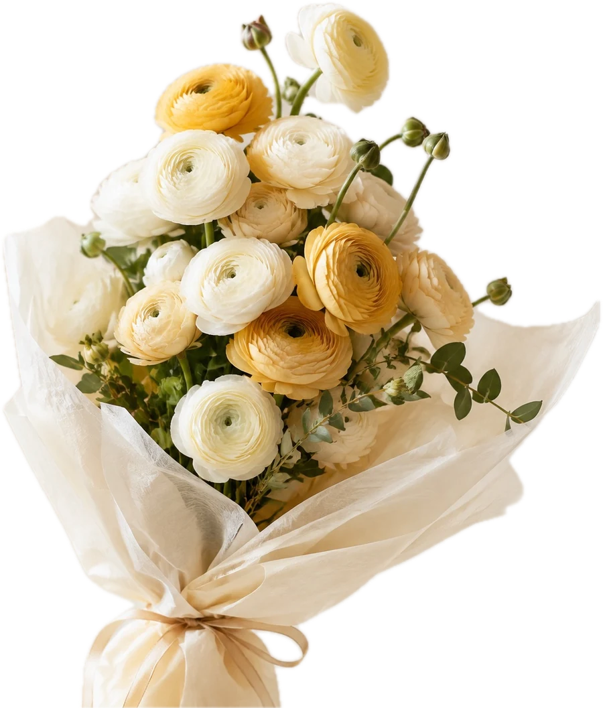

ミオ
miall コンシェルジュ
ミオはAIです。まちがえることもありますので、
大事なことは公式LINEでご確認ください。

女性限定 コミュニティワークスペース
「私って、魅力的！！」
そう思えた日から、人は動きはじめます。
miall は、前に進みたい女性のためのワークスペースです。
働く場所と、学ぶ機会と、話せる相手。
次の一歩に必要なものを、ひとつの場所に集めました。
困っている人のための場所ではなく、進みたい人のための場所です。
いまの実力も、進み具合も、人それぞれで構いません。
向いている方向さえ同じなら、ここでの時間はきっと効きます。
スペースは使い放題。Wi-Fi も電源も、プリンターも4K対応のプロジェクターも。無農薬・オーガニックのドリンクとおやつもあります。手ぶらで来て、一日ここで働けます。
代表・藤澤による個別メンタリングを月1回・30分。仕事のこと、お金のこと、これからのこと。考えを整理して、やることを決めて帰る時間を、会費のなかに入れています。ご予約は公式LINEから。
月1回の miall 会、自由に作れる同好会、会員による勉強会。刺激も、相談も、仕事の依頼も、ここから生まれています。
使いたいものを、使いたいだけ。
あとからご用意いただくものはありません。
ドリンクもおやつも、無農薬・オーガニックにこだわった良質なものをご用意しています。
座りっぱなしの日に、10分だけでも身体を動かせる。ワークスペースで、これができる場所はほとんどありません。
打合せも、発表も、着替えも、運動も。ここで完結します。
担当するのは、代表の藤澤美嘉。
株式会社Siayell 代表・金融コンサルタントとして、国内外の金融機関数十社と取引し、一般のお客様から超富裕層まで、お金と事業の相談を受けてきました。
商品設計から販売動線まで研究し尽くした経験をもとに、値段をどう上げるか、次にどこへ広げるか、どうすれば売れる形になるか。—— そういう話を、月に一度、ひとりずつうかがいます。
相談というより、考えを整理して、次の一手を決めて帰る時間です。
※月に1回・30分です。ご予約は公式LINEから承ります。
※今後、会員数に応じて当社のマネージャークラスが担当する場合があります。
※会員数によってはグループ形式（4〜5名・60分程度）でのご案内となる場合があります。
※税務・投資・保険など、資格が必要な個別の判断については、専門家や公的窓口をご案内します。
仕事のことも、体のことも、心のことも。
それぞれの道を究めた人たちが、miall に関わっています。
聞きたいことがあるとき、聞ける人がいる。その距離の近さが、ここのいちばんの設備かもしれません。
事業を広げようとすると、必ずお金の話にぶつかります。
借りるべきか、使える制度はあるか、そもそも今なのか。
金融の現場を長く見てきた人間が身近にいるので、調べる前にまず聞けます。
エンジェル投資家コミュニティとも連携しています。
借りる以外の道を考えたいとき、その世界を知っている人に話を聞けます。
ひとりで調べていたら、たどり着かなかった選択肢が見つかることがあります。
ほかにも、こんな専門家が。
——— まだまだ、たくさん。
ここに書ききれない方が、たくさんいらっしゃいます。
※それぞれの専門のサービスは、会費とは別のお申し込みになります。
会員のみなさまには会員価格をご用意しています。
同好会は、
自由に作れます。
興味の合う人が集まれば、それで同好会。運営が場所と機材をご用意します。
「あの会があるから、今日は行こう」という日ができます。
好きなことから始めた集まりが、そのままお仕事につながっていくこともあります。
月1回の miall 会は、
おいしいものを食べながら。
いま取り組んでいることを話して、お互いの手を借ります。
かしこまった集まりではありません。おいしいものがあると、人は自然と話しはじめます。
ゲストのお誘いも歓迎しています。お友だちを連れてきていただけます。
※毎回、会費制です（お食事代として）。金額はお店により毎回変わりますので、その都度ご案内します。ご参加は自由です。
教わる側から、
教える側へ。
会員によるセミナーや勉強会の企画は自由です。プロジェクター（4K対応あり）もスクリーンもマイクも揃っているので、思い立ったその場でひらけます。
はじめは同好会の小さな集まりから。慣れてきたら、学びの場の講師に。
あなたが積んできたものを、待っている人がここにいます。
※集客をともなう場合は、参加者名簿にお名前のある方のみご利用いただけます（開催2日前までにご連絡ください）。
年に何度か、
少し遠くまで行きます。
リトリート、農業体験。手を動かして、景色を変えて、頭を切り替える時間です。
次にやりたいことを思いつくのは、たいていこういう日だったりします。
同じ時間を一緒に過ごした人とは、そのあとの関わり方が変わります。
帰ってきてからの miall が、少し違って見えるはずです。
※リトリートなど一部の企画は、別途参加費をいただきます。
ひとりで決めた目標は、ひとりで忘れられます。
ここでは、決めたことを誰かが知っていて、できた日には一緒に喜びます。
人を応援できる人でいること。それが、この場所のたったふたつの約束のひとつです。
必要になったときに、学べる場をひらいています。
仕事にそのままつながるテーマで、連続の学びの場をひらいています。
「学んで終わり」ではなく、終わったあとに仕事が増えていることをゴールに置いています。
教える人は、会員さまにお願いすることもあります。
学ぶ側からはじめて、教える側に回る。その道もここにあります。
※学びの場は会費とは別のお申し込みです。会員価格をご用意しています。

ラナンキュラスRANUNCULUS
miall のテーマフラワーです。
幾重にも花びらを重ねて、ゆっくりひらいていく花。
この花言葉のような人が増えたら、という気持ちでこの場所をつくりました。
習いごとでも、講座でも、よくあることだと思います。
ここでは、そうならないようにしています。
メンタリングは、話して終わりにしません。次の一手をひとつ決めてお帰りいただきます。決めたことは記録に残して、翌月そこから始めます。
学びの場のゴールは「わかった」ではありません。終わったあとに仕事が増えていることをゴールに置いています。
miall 会で話したことは、誰かが覚えています。できた日には、一緒に喜ぶ人がいます。ひとりで決めた目標は、ひとりで忘れられます。
場所を借りるだけなら、もっと安いところがあります。
ここに来る意味は、帰るときに何か持っていることです。
ほとんどの方がおひとりでいらっしゃいます。ご入会のときに運営から皆さまへご紹介しますし、月1回のmiall会もあるので、自然と顔見知りになっていきます。もちろん、静かに作業されるだけの日があっても構いません。
もちろんです。副業をされている方、独立を考えている方、リモートワークの方もいらっしゃいます。「これから何かを始めたい」という気持ちがあれば十分です。
週1回でも十分に元は取れます。月1回のメンタリング、miall会、セミナー、設備の利用。通う回数より、必要なときに必ず使える状態にあることのほうが大きいと思います。
専用の駐車場はご用意しておりません。近隣のコインパーキングをご利用ください。ビルの周辺にいくつかございます。
年払いの会費は、途中でご退会される場合も返金いたしかねます。1年間ご利用いただくことを前提とした割引価格のため、日割り・月割りでの精算も行っておりません。
迷われている場合は、まず月払いではじめていただくのが安心です。

RANUNCULUS
ラナンキュラスの花言葉は、
「とても魅力的」。
面談は無料です。30分ほど、場内をご案内しながらお話しします。
その日に決めていただく必要はまったくありません。
まず、どんな人が集まっているかを見にきてください。
ドロップインのご予約も、同じ窓口で承っています。
今月のイベント予定を見る →
ミオはAIです。まちがえることもありますので、
大事なことは公式LINEでご確認ください。